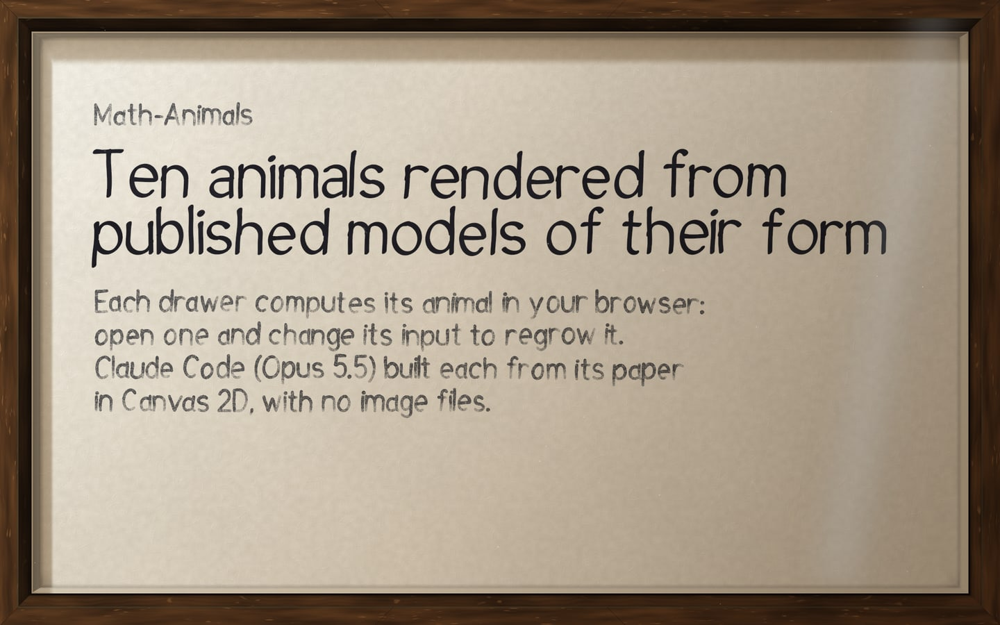
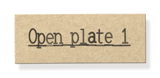
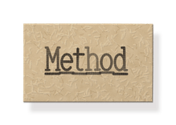
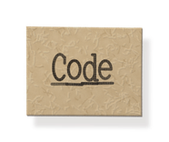

Each drawer computes its animal in your browser: open one and change its input to regrow it.
Claude Code (Opus 5.5) built each from its paper in Canvas 2D, with no image files.



Claude Code, running Opus 5.5, wrote every line. Sanju Sunny directed and gave notes.
All ten pages inline one shared kit for the drawer, light, card and lettering, so the series has one light model, palette and line weight, and a parameter can change on one plate without touching the others. Each page is a pure function of time, seek(t), which is what the film and the scrubber use.
Limitations. The forms hold up, but the surfaces still read as computed. Only the dragonfly passed its reviewer, and a round aimed at photographic realism returned REVISE on all 45 reviews.